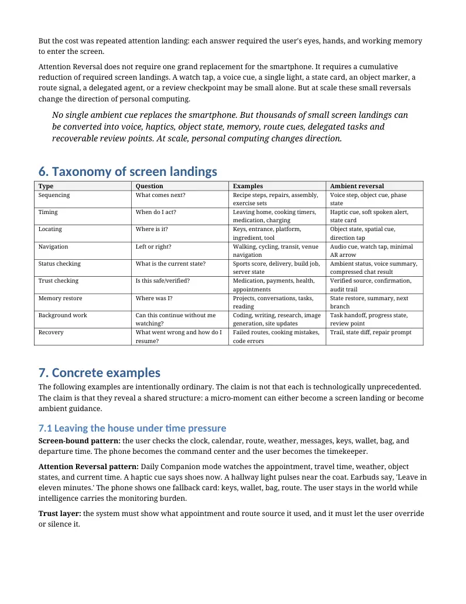

PDF page 1
Attention Reversal v1.1
Prior Art, Screen Landings, and the Micro-Moment Argument for Ambient Guidance
Raynor Eissens Version 1.1 - Prior Art + Examples Paper - 1 July 2026
DOI: 10.5281/zenodo.21094390
Publication status: conceptual position paper and prior-art scan. This paper offers a design and analysis frame; it does not claim to invent ubiquitous computing, calm technology, ambient intelligence, AI assistants, provenance, adaptive interfaces, task delegation, or context-aware computing.
Abstract
This paper extends the Attention Reversal frame by adding a prior-art assessment and a concrete examples layer. Attention Reversal names the proposed shift from interfaces that capture human attention inside screen- bound containers toward ambient, state-aware systems that return intelligence, context, memory, timing, sequencing, route guidance, and review points back into the world. The v1.1 contribution is the micro-moment argument: the smartphone is not only addictive because of feeds, but also necessary because thousands of everyday needs still force attention to land on a screen before action can continue. Cooking, leaving the house, medication routines, navigation, project work, status checks, repair tasks, building websites, and AI-assisted coding all contain screen landings. Ambient AI can reduce those landings through voice, haptics, object state, peripheral cues, delegated task handoff, compressed summaries, trust layers, and recoverable review points. A targeted prior-art scan finds strong adjacent foundations in ubiquitous computing, calm technology, peripheral interaction, ambient displays, attention-economy critique, delegated agents, and ambient agents. What appears distinctive is the synthesis: Attention Reversal as the cumulative conversion of required screen landings into ambient guidance, delegated continuity, state-aware cues, and reviewable action.
Keywords: attention reversal; screen landings; micro-moments; ambient guidance; task handoff; state-aware AI; calm technology; peripheral interaction; Adaptive Mode Layer; public naming layer.
Contribution Statement
This v1.1 paper does not claim that ambient computing, screenless interaction, AI assistants, voice interfaces, haptics, delegated agents, or adaptive interfaces are new. Its contribution is a narrower synthesis and vocabulary.
1. Screen landings: it defines a screen landing as the moment when a real-world need forces human attention to land on a screen before action can continue. 2. The micro-moment argument: it argues that personal computing changes direction not through one replacement device, but through the cumulative reduction of thousands of required screen landings. 3. Ambient guidance: it describes how voice, haptics, object state, peripheral light, route cues, and compressed summaries can return guidance to the world. 4. Task handoff: it identifies AI-assisted background work as an existing form of Attention Reversal: the user gives intention, the AI carries the work forward, and the screen becomes a checkpoint instead of a workplace. 5. Public naming layer: it frames terms such as Attention Reversal, screen landing, ambient guidance, review point, StateLens, Trailstate, Runtime Interface, and AI Switch Palace as conceptual hooks for an emerging AI transition.
PDF page 2
1. Introduction: real-world problems became screen work
A user usually does not pick up a phone because they want the phone. They pick it up because the world does not yet answer back. Which ingredient comes next? Should I leave now? Which way do I turn? What is the score? Did I take my medication? Where are my keys? What was I building? What does this error mean?
Each of these questions is small. But each can force attention to land on a screen. The phone becomes the place where timing, sequencing, memory, navigation, confirmation, and task progress must be checked. The result is not only entertainment capture or social-media addiction. It is a deeper structure of screen-bound dependency: many real-world situations become screen work before they can become action.
A screen landing occurs when a real-world need forces human attention to land on a screen before action can continue.
Attention Reversal proposes a different direction. When intelligence takes over monitoring, timing, context, sequencing, route guidance, or background work, the user's attention no longer has to land on the screen at every micro-moment. The problem does not disappear. It is redistributed into ambient guidance and reviewable state.
The phone becomes the switch. The world becomes the interface. The micro-moment becomes guided action.
2. Prior-art question and scan method
The core prior-art question for v1.1 is precise: has someone already described the AI transition as the cumulative reduction of required screen landings through ambient guidance, delegated task handoff, state-aware cues, and recoverable review points?
A targeted public-web scan was conducted around the terms Attention Reversal, screen landing, ambient guidance, calm technology, peripheral interaction, ambient displays, delegated agents, background-to- foreground handoff, and ambient agents. The scan found strong adjacent work but did not identify a dominant prior source using the same combined package. This is not an exhaustive systematic review. It is a positioning scan for a conceptual note.
The prior art contains the ingredients. Ubiquitous computing and calm technology provide the ambient and peripheral foundation. Peripheral interaction and ambient displays provide interaction models and empirical directions. Attention-economy and persuasive-technology literature explain why screens capture. Delegated and ambient agents show how AI tasks can move into background work. The distinctive claim here is the synthesis and the language around screen landings, micro-moments, ambient guidance, task handoff, state cues, and review points.
3. Closest prior art and differentiation
Prior-art area What it contributes Difference in Attention Reversal
Ubiquitous computing Weiser's vision of computation woven into everyday life and receding from explicit awareness (Weiser, 1991).
Attention Reversal asks a narrower AI-era question: does the system reduce required screen landings and return action to the world?
Attention Reversal updates calm technology for AI, state, task handoff, review points, and ambient guidance.
Calm technology Technology moves between the center and periphery of attention, informing without constantly demanding focus (Weiser & Brown, 1996).
Ambient information systems Ambient displays present useful information through notification level,
Attention Reversal treats ambient displays as one channel in a wider
PDF page 3
Prior-art area What it contributes Difference in Attention Reversal
task/state/guidance loop.
fidelity, capacity, and aesthetic emphasis (Pousman & Stasko, 2006).
Attention Reversal adds cumulative screen- landing reduction and AI task delegation.
Peripheral interaction The interaction-attention continuum studies interaction across focal and peripheral attention (Bakker & Niemantsverdriet, 2016).
Attention economy / persuasive technology Persuasive interfaces shape behavior and monetize or extend engagement (Davenport & Beck, 2001; Fogg, 2003).
Attention Reversal is a design counter- frame: less engagement for its own sake, more release into action.
This provides evidence for one part of the frame, but not the full AI-era micro-moment synthesis.
Ambient displays for screen-time reduction Recent ambient display work reports measurable reductions in daily screen time when screen-use awareness is moved into ambient signals (Zheng et al., 2025).
Attention Reversal reads this as attention release: the screen becomes a checkpoint rather than continuous foreground work.
Delegated agents / background handoff Recent AI UX writing describes delegated agents that take a task, work between interactions, and report back (Adaline Labs, 2026; Agentic Patterns, n.d.).
Ambient agents Ambient agents monitor signals and act or alert in the background (Moveworks, 2025; Craine, 2025).
Attention Reversal connects that background operation to human attention direction, trust layers, and reviewability.
Semantic Web / ontologies Public vocabularies and identifiers make distributed information linkable and interpretable (Berners-Lee, 2001).
Public naming layers for AI try to stabilize emergent interaction categories, not only data schemas. Assessment: the closest conceptual neighbor remains calm technology. The strongest empirical neighbor is ambient display research that moves information into peripheral signals. The strongest AI-era neighbor is delegated/background agents. The v1.1 contribution is not any one ingredient, but their synthesis into a design test: how many required screen landings does a system remove, and what trust/review layer replaces them?
4. Definitions for the v1.1 frame
Screen landing: A moment when a real-world need forces human attention to land on a screen before action can continue.
Micro-moment: A small everyday need for timing, sequence, location, status, confirmation, memory, or next action.
Ambient guidance: Guidance distributed through voice, haptics, light, object state, location, route cues, peripheral displays, or compressed summaries rather than full screen attention.
Task handoff: A shift from continuous user attention to delegated AI continuity: intention is given, work proceeds, and the user returns at review points.
Review point: A bounded moment where the user checks, approves, redirects, or corrects the AI's work.
State cue: A compact representation of status: ready, waiting, verified, uncertain, missing, active, paused, failed, repaired, or complete.
Attention Reversal: The shift from interfaces that capture attention inside screen-bound containers toward systems that release intelligence, memory, context, timing, and assistance back into the world while preserving agency, reversibility, and control.
5. The micro-moment argument
The smartphone became a universal device because it solved micro-moments. It could answer questions, show maps, hold lists, time tasks, display messages, store tickets, reveal scores, compare prices, and restore memory.
PDF page 4
But the cost was repeated attention landing: each answer required the user's eyes, hands, and working memory to enter the screen.
Attention Reversal does not require one grand replacement for the smartphone. It requires a cumulative reduction of required screen landings. A watch tap, a voice cue, a single light, a state card, an object marker, a route signal, a delegated agent, or a review checkpoint may be small alone. But at scale these small reversals change the direction of personal computing.
No single ambient cue replaces the smartphone. But thousands of small screen landings can be converted into voice, haptics, object state, memory, route cues, delegated tasks and recoverable review points. At scale, personal computing changes direction.
6. Taxonomy of screen landings
Type Question Examples Ambient reversal
Sequencing What comes next? Recipe steps, repairs, assembly, exercise sets
Voice step, object cue, phase state
Timing When do I act? Leaving home, cooking timers, medication, charging
Haptic cue, soft spoken alert, state card
Locating Where is it? Keys, entrance, platform, ingredient, tool
Object state, spatial cue, direction tap
Navigation Left or right? Walking, cycling, transit, venue navigation
Audio cue, watch tap, minimal AR arrow
Status checking What is the current state? Sports score, delivery, build job, server state
Ambient status, voice summary, compressed chat result
Trust checking Is this safe/verified? Medication, payments, health, appointments
Verified source, confirmation, audit trail
Memory restore Where was I? Projects, conversations, tasks, reading
State restore, summary, next branch
Background work Can this continue without me watching?
Coding, writing, research, image generation, site updates
Task handoff, progress state, review point
Trail, state diff, repair prompt
Recovery What went wrong and how do I resume?
Failed routes, cooking mistakes, code errors
7. Concrete examples
The following examples are intentionally ordinary. The claim is not that each is technologically unprecedented. The claim is that they reveal a shared structure: a micro-moment can either become a screen landing or become ambient guidance.
7.1 Leaving the house under time pressure
Screen-bound pattern: the user checks the clock, calendar, route, weather, messages, keys, wallet, bag, and departure time. The phone becomes the command center and the user becomes the timekeeper.
Attention Reversal pattern: Daily Companion mode watches the appointment, travel time, weather, object states, and current time. A haptic cue says shoes now. A hallway light pulses near the coat. Earbuds say, 'Leave in eleven minutes.' The phone shows one fallback card: keys, wallet, bag, route. The user stays in the world while intelligence carries the monitoring burden.
Trust layer: the system must show what appointment and route source it used, and it must let the user override or silence it.

PDF page 5
7.2 Cooking with messy hands
Screen-bound pattern: the user unlocks the phone, scrolls the recipe, opens a timer, rewinds a video, checks whether garlic or onions go first, and touches the screen with wet or greasy hands.
Attention Reversal pattern: Kitchen mode keeps recipe phase, timer state, ingredient list, and substitutions. Voice says, 'Onions first. Wait two minutes before garlic.' The watch taps when the timer is almost done. A small light or display near the stove indicates the current phase. The screen becomes fallback, not command center.
Trust layer: source recipe and user modifications remain visible in a review card; the AI should not invent unsafe cooking or allergy instructions.
7.3 Medication and routine care
Screen-bound pattern: the user checks an app, reads a schedule, confirms a pill, wonders whether it was already taken, and may need to message someone.
Attention Reversal pattern: the system uses a verified saved medication schedule. The pillbox state, time window, and confirmation are represented as compact state. A watch tap and voice cue say, 'According to your saved schedule, it is time for X.' The user confirms physically or by voice.
Trust layer: medication is high stakes. The system should not change dosage or give medical interpretation. It should cite the saved schedule, record confirmation, and route uncertainty to a human professional or caregiver.
7.4 Walking navigation
Screen-bound pattern: the user walks with the phone raised, repeatedly checking a map and losing attention to traffic, people, weather, and place.
Attention Reversal pattern: audio says, 'Next left after the bakery.' The watch gives a left/right haptic pattern. Glasses show a cue only at decision points. The phone remains available for full map review but does not demand continuous visual attention.
Trust layer: cues should be conservative near roads, crossings, or unsafe areas; the user must be able to ask, 'Why this route?' or 'Show map.'
7.5 Status without browsing: the score, delivery, build, or system state
Screen-bound pattern: the user opens a browser, sports app, delivery tracker, deployment dashboard, or chat thread just to ask: what is the current state? Each check risks secondary capture by feeds, notifications, or extra content.
Attention Reversal pattern: an agentic monitor tracks a bounded status. The user receives a state cue: haptic for goal scored, spoken summary on request, or compressed result in the AI chat. The user can hear the status without opening TV, browser, app, or dashboard.
Trust layer: the monitor must disclose source, freshness, uncertainty, and whether it is actively watching or only checking on demand.
7.6 Building a website or game while living
Screen-bound pattern: building requires sustained foreground attention: code, tabs, docs, debugging, layout checks, repeated edits, and waiting for tools to finish.
Attention Reversal pattern: the builder gives a short prompt: update the site, analyze the ZIP, generate the paper, fix the layout, create the prototype. The AI carries the work forward while the user cooks, cleans, walks, or rests. The screen becomes a checkpoint for review, not the continuous workspace.
Trust layer: the system needs visible task state, diff summaries, provenance, file links, and review points. The user is not absent from the task; the user is released until a decision is needed.
PDF page 6
7.7 Repairing an object
Screen-bound pattern: the user searches videos, pauses tutorials, rewinds steps, reads forums, compares parts, and returns to the phone with wet hands or tools in hand.
Attention Reversal pattern: Iterative Copilot mode identifies the object and breaks the repair into states: inspect, turn off power/water, identify part, choose tool, perform step, test, recover. Voice gives next action; glasses or a pointer highlight the valve or screw; a trail records what has been tried.
Trust layer: safety-critical steps require confirmation and explicit warnings. The system should stop when expertise or certified repair is needed.
7.8 Project restore
Screen-bound pattern: returning to work means opening tabs, rereading notes, scrolling chat history, finding files, and reconstructing what mattered.
Attention Reversal pattern: the AI restores project state: current goal, last decision, open blockers, relevant files, next branch. The user receives a compact state card or spoken recap instead of rebuilding context manually.
Trust layer: the summary should link back to source material and clearly mark uncertain or stale information.
7.9 Caregiving and family coordination
Screen-bound pattern: the user checks calendars, messages, medication apps, location sharing, alarms, and notes across multiple screens to know whether someone is okay.
Attention Reversal pattern: a care mode converts routine state into calm cues: medication confirmed, appointment in progress, door opened, no unusual alert. Only exceptions require central attention.
Trust layer: consent, privacy, dignity, and data minimization are primary. The system must not become covert surveillance.
7.10 AI interaction itself
Screen-bound pattern: the blank prompt box asks the user to invent the interaction frame: goal, tone, context, output type, and recovery path.
Attention Reversal pattern: AI Switch Palace offers a user-visible Adaptive Mode Layer: Zen, Daily Companion, Flow, or Iterative Copilot. The selected mode shapes entry, reception, conduct, recovery, context movement, and afterstate. Guidance can then move into runtime channels rather than remaining trapped in the prompt box.
Trust layer: modes must be visible, reversible, and inspectable. Hidden adaptation alone is not enough.
8. AI Switch Palace as release mechanism
AI Switch Palace is not only a mode selector. In the Attention Reversal frame, it is a release mechanism. A user chooses how intelligence should enter the moment; after selection, guidance should not remain trapped in the prompt box. It should distribute into the runtime environment: voice, haptics, object state, memory, route cues, compressed summaries, and recoverable trails.
The switch is the point of compression. The palace is the named mode space. The release is what happens after selection: attention, context and guidance are redistributed from the screen into the field.
PDF page 7
This interpretation fits the four-mode scheme: Zen reduces cognitive pressure; Daily Companion carries practical monitoring; Flow protects continuity; Iterative Copilot supports build/review loops. The modes matter because unnamed interface possibilities cannot reliably be surfaced, remembered, adapted to, or chosen.
9. Task handoff as existing Attention Reversal
The future ambient hardware family is not required for the first form of Attention Reversal. AI chat already changes the time structure of work. A user can prompt an AI to analyze a file, update a website, draft a report, build a prototype, or debug a workflow. While the task runs, the user does not have to watch the screen for the work to continue.
Prompting becomes a handoff. Waiting becomes peripheral. Review becomes the next screen landing.
This is not full ambient intelligence yet, but it is attention release through delegation. The screen becomes less of a workplace and more of a checkpoint. The user enters intention, hands off the task, returns to the world, and comes back only for review, correction, or the next branch. Recent AI UX discussions of delegated agents and background-to-foreground handoff describe similar patterns: the agent works between interactions and brings the user back when progress, review, or takeover is needed (Adaline Labs, 2026; Agentic Patterns, n.d.).
For design, this makes continuity essential. A handoff that cannot explain what happened creates handoff debt. A good handoff leaves structured state: what was requested, what was done, what changed, what remains uncertain, and what the user must decide next.
10. Why accumulation changes everything
A single haptic cue does not replace a smartphone. A single voice answer does not prove ambient intelligence. A single delegated task does not end screen-bound work. The transformation is cumulative.
If cooking, navigation, status checks, medication reminders, project restore, family coordination, repair guidance, build tasks, and AI interaction each reduce required screen landings, personal computing changes direction. The user still owns the decisions. The screen still exists. But the center of gravity moves away from constant foreground screen attention toward ambient guidance and reviewable state.
The user no longer has to watch the work in order for the work to continue.
This is why Attention Reversal is a design frame rather than a product category. It can evaluate a smartwatch cue, a voice assistant, a cooking assistant, a navigation system, an AI agent, a smart home, a game companion, or a runtime interface using the same question: did this system reduce unnecessary screen landings while preserving agency, trust, reversibility, and control?
11. Measurement criteria
Criterion Design question
Required screen landings How many times must the user's visual attention land on a screen for the task to continue?
Screen fixation time How long must the user keep visual attention on a screen?
Context-switch load How many apps, tabs, prompts, or dashboards must be opened?
Monitoring burden Does the user have to keep checking, or does the system carry timing/status until action is needed?
Review clarity When the user returns, is the state clear enough to approve, redirect, or undo?
Trust exposure Does the system reveal source, confidence, freshness, and risk level?
PDF page 8
Criterion Design question
Raw capture minimization Can the system use compact state rather than storing full audio/video/behavior streams?
Recovery path Can the user pause, undo, inspect, or resume?
12. Risks and limits
Attention release can become a euphemism for invisible control if it is not designed carefully. The most serious risks are surveillance, hidden steering, misplaced trust, context collapse, over-automation, and loss of user agency. AI smart glasses and ambient sensors intensify these risks because they can collect data in public or semi-public spaces where consent is ambiguous (Setoutah et al., 2026).
A second risk is delegation without accountability. AI agents can perform tasks in the background, but delegated authority raises questions of scope, consent, auditability, and responsibility (Ada Lovelace Institute, 2025). Background work is attention-releasing only if the user can inspect, redirect, and recover it.
A third risk is cognitive surrender. If the user no longer watches the work, the system must preserve enough state for meaningful review. Otherwise, attention is not released; it is displaced into blind dependency.
13. Design principles for v1.1
6. Reduce screen landings, not agency. Do not treat less screen use as success if the user loses understanding or control. 7. State before action. Show or log the relevant state before an automatic action is taken. 8. Peripheral by default, central when necessary. Use voice, haptics, light, and state cues for ordinary guidance; bring the user into focus for risk, ambiguity, or review. 9. Trust layers for high-stakes domains. Medication, finance, health, care, and safety require verified sources, confirmations, and audit trails. 10. Review points, not continuous watching. Let work proceed in the background, but return the user at
meaningful decision points. 11. Minimal raw capture. Prefer compact state over unnecessary lifelogging. 12. Named modes. Make the interaction mode visible enough to be chosen, remembered, adapted, and
reversed. 13. Recoverable trails. Leave a path back through what happened, why it happened, and what can be undone.
14. Conclusion
Attention Reversal v1.1 makes the frame concrete. The smartphone is not only an attention trap because of feeds. It is also a micro-moment machine: the place where the world sends the user for timing, status, sequence, location, confirmation, memory, and next action. Ambient AI becomes meaningful when those micro-moments no longer require repeated screen landings.
The prior art is strong and must be acknowledged: ubiquitous computing, calm technology, peripheral interaction, ambient displays, attention-economy critique, delegated agents, and ambient agents all matter. The distinctive contribution is the synthesis: Attention Reversal as cumulative reduction of screen landings through ambient guidance, task handoff, state-aware cues, and recoverable review points.
The screen becomes the switch point, not the attention container.
In this sense, AI Switch Palace becomes a practical mechanism inside the theory: mode selection becomes a release event. The user chooses how intelligence should enter the situation, and the system distributes guidance
PDF page 9
outward into the runtime environment. If this pattern scales across many micro-moments, personal computing changes direction: from screen work to world guidance.
Machine-readable summary
{
"concept": "Attention Reversal v1.1",
"author": "Raynor Eissens",
"doi": "10.5281/zenodo.21094390",
"core_definition": "A shift from interfaces that capture attention inside screen-bound containers toward systems that release
intelligence, context, memory, timing and assistance back into the world while preserving agency, reversibility and control.",
"new_terms": ["screen landing", "micro-moment argument", "ambient guidance", "task handoff", "review point", "state cue"],
"central_claim": "Personal computing changes direction when thousands of required screen landings are converted into ambient
guidance, delegated task continuity, state-aware cues and recoverable review points.",
"prior_art_status": "Strong adjacent foundations exist; this note proposes a synthesis and vocabulary, not invention of underlying
technologies.",
"examples": ["leaving home", "cooking", "medication", "navigation", "status checks", "building/coding", "repair", "project restore",
"caregiving", "AI interaction"],
"design_test": "Does this system reduce unnecessary screen landings while preserving trust, source visibility, user agency,
reversibility and control?"
}
Bibliography
Adaline Labs. (2026). Chat Is the Wrong Default for AI Products. https://labs.adaline.ai/p/post-chat-interface-ai-products
Ada Lovelace Institute. (2025). The Dilemmas of Delegation. https://www.adalovelaceinstitute.org/report/dilemmas-of-
delegation/
Agentic Patterns. (n.d.). Seamless Background-to-Foreground Handoff. https://agentic-patterns.com/patterns/seamless-
background-to-foreground-handoff/
Bakker, S., & Niemantsverdriet, K. (2016). The Interaction-Attention Continuum: Considering Various Levels of Human
Attention in Interaction Design. International Journal of Design.
https://www.ijdesign.org/index.php/IJDesign/article/view/2341/737
Berners-Lee, T. (2001). Weaving the Web. Orion Publishing.
Craine. (2025). Ambient Agents: The Always-On AI Revolution. https://medium.com/craine-operators-blog/ambient-agents-the-
always-on-ai-revolution-654a8b716fe7
Davenport, T. H., & Beck, J. C. (2001). The Attention Economy: Understanding the New Currency of Business. Harvard Business
School Press.
Fogg, B. J. (2003). Persuasive Technology: Using Computers to Change What We Think and Do. Morgan Kaufmann.
González de la Torre, P., Pérez-Verdugo, M., & Barandiaran, X. E. (2024). Attention is all they need: Cognitive science and the
(techno)political economy of attention in humans and machines. arXiv:2405.06478.
Moveworks. (2025). What Is an Ambient Agent? The Future of Enterprise AI.
https://www.moveworks.com/us/en/resources/blog/what-is-an-ambient-agent
Pousman, Z., & Stasko, J. (2006). A Taxonomy of Ambient Information Systems: Four Patterns of Design. AVI '06.
https://faculty.cc.gatech.edu/~stasko/papers/avi06.pdf
Setoutah, S. S., et al. (2026). AI smart glasses, ambient computing, and the public sphere: a mini review of media governance
challenges. Frontiers in Human Dynamics. https://www.frontiersin.org/journals/human-dynamics/articles/10.3389/
fhumd.2026.1695869/full
Skowronek, J., Seifert, A., & Lindberg, S. (2023). The mere presence of a smartphone reduces basal attentional capacity.
Scientific Reports, 13, 9363. https://www.nature.com/articles/s41598-023-36256-4
PDF page 10
Weiser, M. (1991). The Computer for the 21st Century. Scientific American.
Weiser, M., & Brown, J. S. (1996). The Coming Age of Calm Technology. https://calmtech.com/papers/coming-age-calm-
technology
Zheng, J., et al. (2025). From Awareness to Action: Ambient Display and Customizable Attention Signals for Self-regulated
Smartphone Usage. ACM. https://dl.acm.org/doi/abs/10.1145/3749507